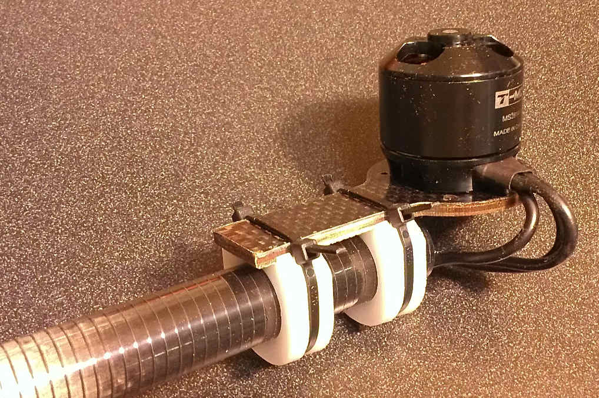
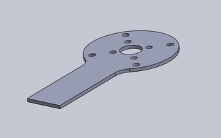
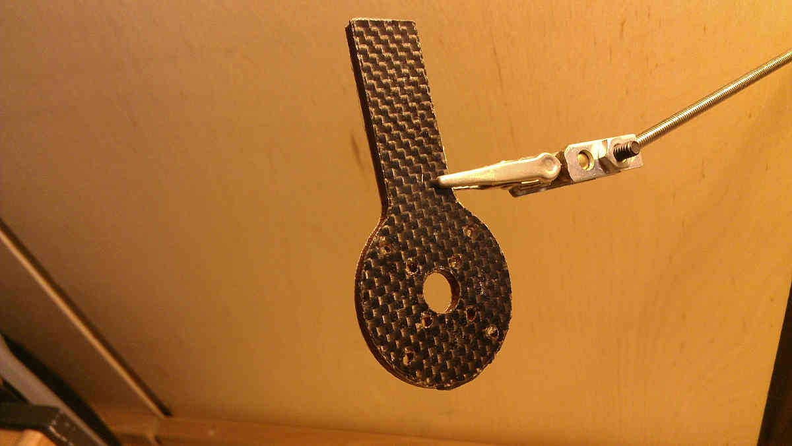
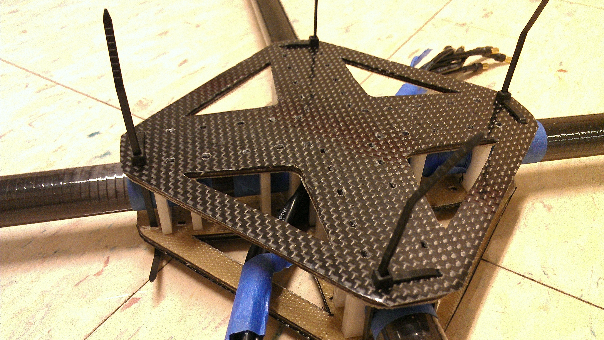

The Datasheet two glorious rocket gurus.
Junk? I wouldn't be so hasty! Earlier, a few of us discovered a collection of leftover carbon fiber tubes about to be scrapped. Luckily, we were able to save them from the trash! Armed with these tubes, I aimed to make these the main structure of the arms. Despite their lack of weight, carbon-fiber tubes are a structure to be reckoned with. They're so durable that only the machine shop's diamond-engrained bandsaw could cut these without severly eating the blade. Unfortunately, tubes are strikingly difficult to join to other structures, so I devised a friction-based clamp approach shown below.
The mounting plate is humble 1/16th [in] plywood reinforced with 2 layers of 3 [oz] S-Glass and one layer of bidirectional carbon fiber scrap. 24 hours of compression after laminating with Aeropoxy created an excellent stiff end-result. From CAD to final product, the pictures do more justice below:
 Each piece of the layup (S-glass, plywood, and carbon fiber) was sliced with the laser cutter. While fiberglass (S-glass) responds to being laser-cut quite nicely by fusing the threads at the edges of the cut, carbon fiber remains loose in thread form. Hence, the pieces need to be carefully handled after being cut to avoid having the cut piece fall apart.
Cutting carbon fiber alone can be a tricky procedure. If a few threads remain uncut by the laser, the piece is essentially impossible to remove without having the details fall apart as the uncut threads prevent the cut piece from leaving the rest of the fabric. Furthermore, carbon fiber threads scatter and jump away from the laser as they heat up. The solution? Two passes on the laser cutter. The first pass should be quick, to allow the carbon fiber threads to jump away from the laser cutter and fixate their position. The next pass should be very slow so that the beam remains on the same, now fixated carbon fiber threads to fully-cut them. I found that on HMC's Epilog 40-watt laser cutter, pass 1 works well at 50 % speed, full power, and pass 2 works well at 5% speed full power.
The Centerpiece is composed of two composite plates with delrin inserts. Almost every one of these pieces was sliced on the laser cutter to ensure that the parts fit together snugly. Combined, the plates and inserts form a compressive sandwich that hold the motor beams in place. Zippy ties hold these plates together, while also providing breakpoints in the event of a nasty crash.
Right now, the controller board is an Arduino Clone from Hobbyking designed to be compatible with the open source MultiWii project.